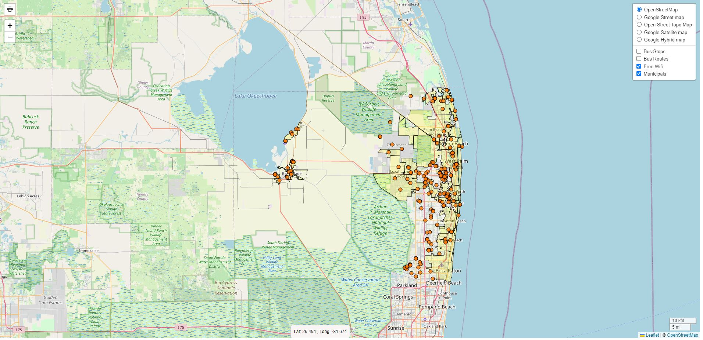
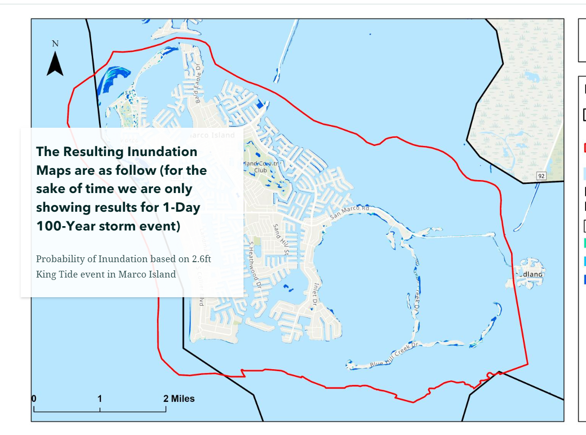
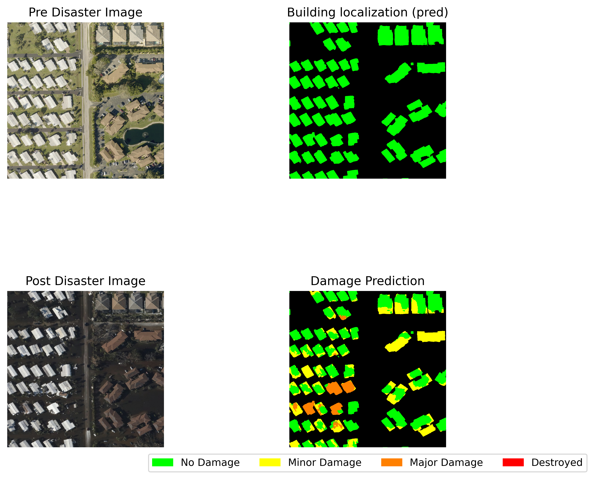
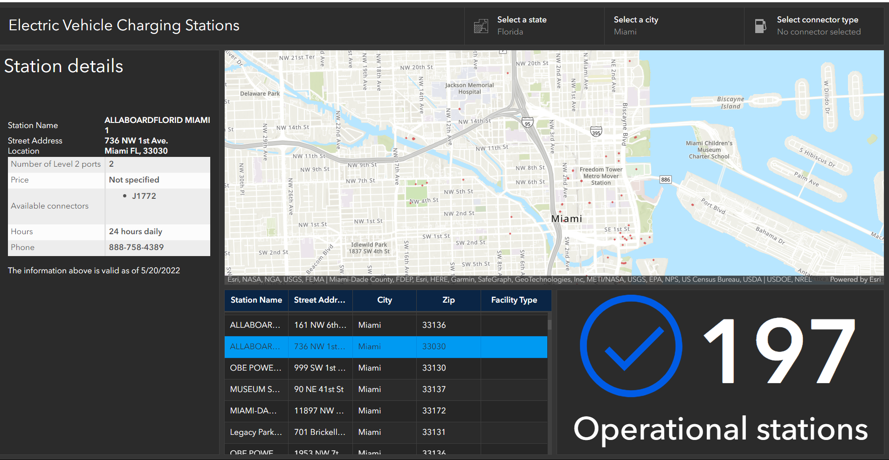
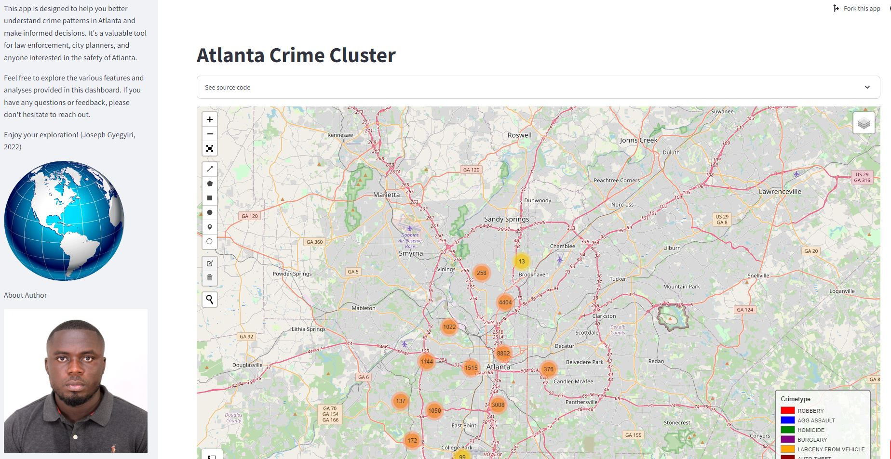

01 · Web GIS
Palm Beach County Wi-Fi map
An interactive Leaflet web map for locating free Wi-Fi sites across Palm Beach County, with municipal boundaries and map-layer controls for exploring access points.
Open Wi-Fi map ↗GIS development · Selected work
Web maps, dashboards, field systems, and analytical applications built across ArcGIS, open-source mapping tools, Python, and data workflows.

01 · Web GIS
An interactive Leaflet web map for locating free Wi-Fi sites across Palm Beach County, with municipal boundaries and map-layer controls for exploring access points.
Open Wi-Fi map ↗
02 · GIS analysis
Spatial analysis and visualization for stormwater planning, historic disasters, crime patterns, and infrastructure decisions.
View experience map ↗
03 · Field data systems
ArcGIS field mapping that connects field teams to consistent spatial records and supports data collection in the field.
Open field map ↗
04 · Data science / GIS
Machine-learning and geospatial workflows for extracting building damage information from high-resolution disaster imagery.
Read project overview ↗
05 · Dashboard development
An interactive dashboard project for exploring charging station locations, usage patterns, and infrastructure planning questions.
View dashboard details ↗
06 · Python application
A data-driven application combining spatial analysis and interactive visualization to explore crime patterns.
Open application ↗